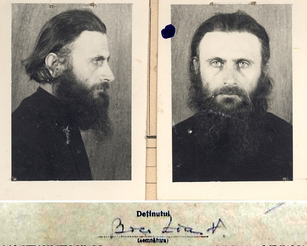
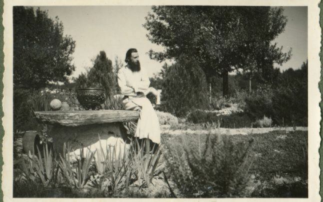

Romanian spiritual leader, persecuted by the Communists

Father Arsenie Boca in the Communist Securitate file
1910 - Born in the village of Vața de Sus, in a family of simple peasants, Iosif and Cristina. Is named Zian.
1929 - Graduates the "Avram Iancu" Highschool in Brad, as head of his promotion.
1929-1933 - Enters the Theological Institute of Sibiu, where he is remarked by his professors. He becomes known as a versatile painter and flute interpret
1933-1938 - Studies art at the Belle-Arte Institute in Bucharest. He also follows the Anatomy course held by Prof. Francisc Rainer. Paints the scene of Michael the Brave in the Romanian Atheneum.
1939 - Is sent to Mount Athos where he spends three months. He brought together with Father Serafim Popescu Greek manuscripts of the Philokalia, which were afterwards translated to Romanian by Fr. Dumitru Stăniloaie.
1939 - Goes to Chișinău to study painting techniques.
1940 - He becomes a monk at the Sâmbăta de Sus Monastery. During the time spent at Sâmbăta de Sus and Prislop, he will write "The Path of The Kingdom" , a spiritual guide that also apart from theology also contains teachings of genetics, mathematics and logic.
1942 - He is made a priest and becomes the abbot of the monastery. He immediately starts a movement of spiritual renaissence amongts the faithful.
1945 - He is arrested by the Communists for the first time for allegedly helping the legionaire movement. He is released because of lack of evidence, but from now on he will be under surveillence until the rest of his life.
1948 - He is arrested and tortured by the Securitate (the Communist security agency), accused of being a legionaire, which is denied by the Father. After being released, he sent to the Prislop Monastery by the Metropolitan Nicolae Bălan.
1949 - In a Securitate file is it mentioned that up to 2000-3000 pilgrims were coming to Prislop for spiritual guidance from Fr. Arsenie.
1950 - Prislop becomes a nun monastery. Fr. Boca but remains the confessor of the monastery.
1951 - Arrested, imprisoned and sent to forced labour for more than one year.
1955 - Arrested, imprisoned and sent to forced labour for 6 months.
1959 - The Prislop Monastery is closed, the nuns are cast away by the regime and Fr. Arsenie Boca is denied the right to serve as a priest. The building is transformed in an elder asylum by the Communists.
1961 - After a long time spent in Bucharest without work, he is hired at the Patriarchy painting workshops. He only participates at the Church services as a singer.
1968 - He is retired. He starts painting the church at Drăgănescu, which will take 15 years.
1969-1989 - He has a small painting workshop near the newly found Sinaia Monastery.
1989 - Dies at Sinaia and is buried at Prislop, according to his own wish.
Today Prislop is an active pilgrimage site where tens of thousands of Christians come to honour the memory of Father Arsenie Boca.
The love that God has for the greatest of sinners is bigger than the love of the greatest saint towards God

Father Arsenie Boca at the Sâmbăta de Sus Monastery in Transylvannia